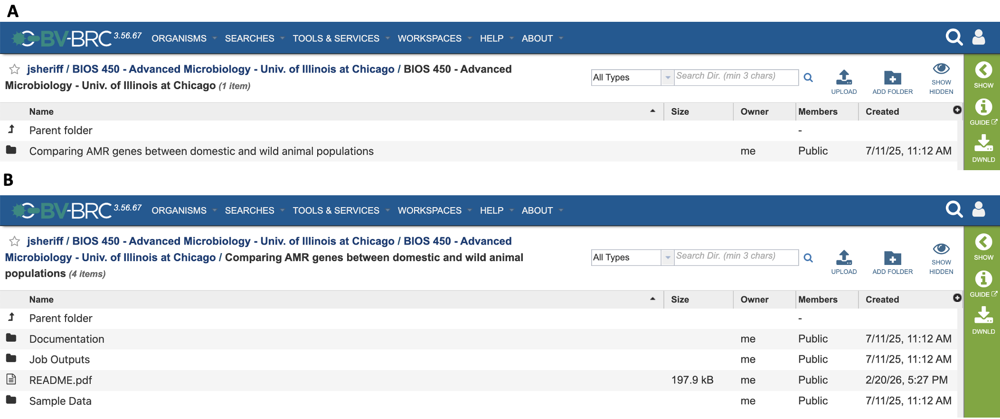
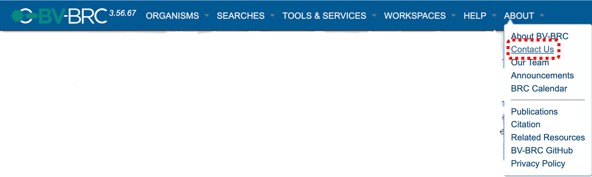

Education¶
{kind=link}
Introduction¶
Along with servicing the biomedical research community, the BV-BRC is commited to servicing the needs of our ever-growing community of educators. BV-BRC for Educators was organized to create a central network for publishing educational workspaces, exercises, and workflows created by educators. This platform will be used to support our educational community through:
Accessiblity. The BV-BRC provides users with free bioinformatic resources, open to all students and instructors registered to our website.
Reproducibility. The sharing of educational material through public workspaces allows for open access to workflows, exercise documents, and sample data, providing consistent results for both instructors and students.
A GUI Platform. The BV-BRC provides users with a mutlitude of high-performance bioinformatic tools, along with millions of curated bacterial and viral genomes, through a easy-to-use, graphical user interface. This also provides our educational community with a means of integrating bioinformatics into their course curricula without requiring the prerequisites necessary for using traditional bioinformatic tools, such as experience utilizing a command line interface.
Support. The BV-BRC team is readily available to provide support to educators through our long-standing ticket submission system and our BV-BRC Community Slack Channel.
Create and Publish an Education Workspace¶
1) Creating a Workspace
Creating an education workspace follows the same process creating a private workspace. A step-by-step walkthrough for creating a new workspace can be accessed here.
2) Organizing Your Content
To ease the use of your workspace by instructors and students, we recommend the following format:

The images above show an example layout for organizing your education workspace. This public education workspace can be accessed here.
Image A shows the contents of the primary, course-level directory for the workspace, titled: “BIOS 450 - Advanced Microbiology - Univ. of Illinois at Chicago”. To provide other educators with minimal context on the contents of your workspace, the workspace title should include the course nomenclature - the course title - the course’s institution. This directory is where your exercise directories are stored, with each each exercise having its own directory. In this case, there is only one execerise included in this education workspace.
Image B shows the contents of the secondary, exercise-level directory, titled: “Comparing AMR genes between domestic and wild animal populations”. The title should be the title of the exercise. All exercise directories share the same, recommended format:
Documentation directory - contains all the necessary documentation for the exercise, such as exercise handouts, exercise questions, and relevant powerpoint slides. Whatever material your students require to be able to successfully complete the exercise is what should be uploaded to this directory.
Job Outputs directory - contains the example job outputs for your exercise. Example job outputs can be used during live exdercise walkthroughs with your class, allowing students to practice submitting service jobs and interpret its results without for their submission to complete. Be sure to leave out job results you do not wish students to have access to.
Sample Data directory - contains all the necessary sample data files needed to complete the exercise, such as raw reads (FASTQ files), contigs (FASTA files), genome groups, or feature groups.
README File - required for each exercise, the README file contains the background information and learning objectives of the exercise, as well as an inventory of all directories and their contents. README files can be uploaded as either docx or pdf files. To make searching workspaces easier for other insructors, we recommend uploading the README as a PDF, allowing others to view the document directly within the BV-BRC workspace. Docx files must be downloaded to view.
A README Template docx file can be downloaded from here. An example README file for the above exercise can be viewed here.
Additionally, the contents of the README file can be copied and pasted with the prompt provided below:
“
The educator workspace README file is designed to provide a general overview of the exercise, facilitating the sharing and use of BV-BRC exercises among the educator community. To publish an educator workspace, a README file is required for each exercise within a workspace, with the following information included:
Corresponding Educator(s): the name, email, and institution of at least one educator to contact regarding the exercise.
Overview: a brief overview of the exercise
Learning Objectives: the learning objectives and goals of the exercise
Files: a list of folders and files included within the exercise. Each exercise should be organized into three folders: (1) Documentation, (2) Job Outputs, and (3) Sample Data.
Services: Services used for this exercise
References: Any sources used to develop this exercise (e.g., non-BV-BRC tools, sample data, related publications, etc.)
Corresponding Educator(s)
[Insert list of corresponding educators]
Overview
[Insert description of exercise overview]
Learning Objectives
[Insert learning objective 1]
Files
- Documentation
[File name/directory name: brief file description]
- Job Outputs
[File name/directory name: brief file description]
- Sample Data
[File name/directory name: brief file description]
Services
[Insert service(s) used]
References
[Insert bibliography for necessary references]
“
3) Publishing Your Workspace
Currently, publishing an education workspace is done in the same manner as publishing a private workspace. A step-by-step tutorial on publishing private workspaces can be accessed here.
4) Notifying the BV-BRC
Once you have published your education workspace, you should contact the BV-BRC in order to have your workspace added to our list of public education workspaces (see Accessing Education Workspaces below). You can contact us via two ways:
a. Email the BV-BRC outreach team. Contact the outreach team to let us know to add your workspace to our public list. Be sure to include the title of your workspace within your email, and ensure that the workspace contains the required material as outlined above. More info on emailing the BV-BRC outreach team can be found below (see Getting Help).
b. Through the BV-BRC Community Slack Workspace. You can also reach us posting your request directly to our #education channel. Find information on how to join the BV-BRC Community Slack below (see Getting Help).
Accessing Education Workspaces¶
All public education workspaces can be found within our inventory of publc workspaces. Below, you can find the current list of public education workspaces being hosted. Don’t see your workspace on here? Please contact us!
Workspace Title |
Publisher |
|---|---|
BIOS 450 - Advanced Microbiology - Univ. of Illinois at Chicago |
Jamal Sheriff |
BIOS 350 - General Microbiology - Univ. of Illinois at Chicago |
Jamal Sheriff |
Getting Help¶
For help with using BV-BRC services and tools, please visit the BV-BRC Documentation Website to review our quick reference guides and tutorials. Walkthrough and workshop videos can be viewed on the BV-BRC Youtube Channel. Questions regarding job submission failures should be submitted through our ticketing system with the Report Issue action button.
For help with your education workspace, workspace publishing, or with questions about using the BV-BRC in your classroom, please contact the BV-BRC outream team by direct email (help@bv_brc.org) or by sending a message with the Contact Us button under the About dropdown menu. To ensure the outreach team quickly recieves your requests, please include an “Education -” tag at the beginning of your email title.
{kind=link}

Join the BV-BRC Community Slack Workspace (bv-brc-community.slack.com) to ask questions directly to the BV- BRC team and discuss with other members of the education community through our #education Slack channel.